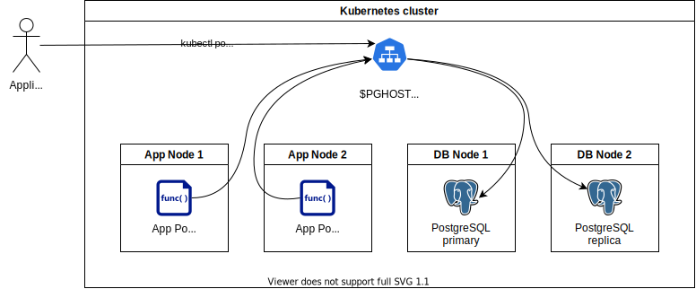

PostgreSQL®¶

This page will help you succeed in connecting your application to a primary relational database PostgreSQL which meets your security and compliance requirements.
Provision a New PostgreSQL Cluster¶
Ask your service-specific administrator to install a PostgreSQL cluster inside your Compliant Kubernetes environment. The service-specific administrator will ensure the PostgreSQL cluster complies with your security requirements, including:
- Business continuity: We recommend a highly available setup with at minimum a primary instance and a replica. Ideally, the PostgreSQL cluster should be configured with a primary and two replicas.
- Disaster recovery: Your service-specific administrator will configure the PostgreSQL cluster with physical backups, logical backups and Point-in-Time Recovery (PITR), as required to meet your Recovery Point Objectives.
- Capacity management: Your service-specific administrator will ensure PostgreSQL runs on dedicated (i.e., tainted) Kubernetes Nodes, as required to get the best performance.
- Incident management: Your administrator will set up the necessary Probes, dashboards and alerts, to discover issues and resolve them, before they become a problem.
- Access control: Your administrator will set up a "root-like" PostgreSQL account, which will allow you to create databases and PostgreSQL users, but not tamper will logging, business continuity or disaster recovery.
Compliant Kubernetes recommends the Zalando PostgreSQL operator.
Install Prerequisites¶
Before continuing, make sure you have access to the Kubernetes API, as describe here.
Make sure to install the PostgreSQL client on your workstation. On Ubuntu, this can be achieved as follows:
sudo apt-get install postgresql-client
Getting Access¶
Your administrator will set up a Secret inside Compliant Kubernetes, which contains all information you need to access your PostgreSQL cluster. The Secret has the following shape:
apiVersion: v1
kind: Secret
metadata:
name: $SECRET
namespace: $NAMESPACE
stringData:
# PGHOST represents a cluster-scoped DNS name or IP, which only makes sense inside the Kubernetes cluster.
# E.g., postgresql1.postgres-system.svc.cluster.local
PGHOST: $PGHOST
# These fields map to the environment variables consumed by psql.
# Ref https://www.postgresql.org/docs/13/libpq-envars.html
PGUSER: $PGUSER
PGPASSWORD: $PGPASSWORD
PGSSLMODE: $PGSSLMODE
# This is the Kubernetes Service to which you need to 'kubectl port-forward' in order to get access to the PostgreSQL cluster from outside the Kubernetes cluster.
# E.g., svc/postgresql1
# Ref https://kubernetes.io/docs/tasks/access-application-cluster/port-forward-access-application-cluster/
USER_ACCESS: $USER_ACCESS
Important
The Secret is very precious! Prefer not to persist any information extracted from it, as shown below.
To extract this information, proceed as follows:
export SECRET= # Get this from your administrator
export NAMESPACE= # Get this from your administrator
export PGHOST=$(kubectl -n $NAMESPACE get secret $SECRET -o 'jsonpath={.data.PGHOST}' | base64 -d)
export PGUSER=$(kubectl -n $NAMESPACE get secret $SECRET -o 'jsonpath={.data.PGUSER}' | base64 -d)
export PGPASSWORD=$(kubectl -n $NAMESPACE get secret $SECRET -o 'jsonpath={.data.PGPASSWORD}' | base64 -d)
export PGSSLMODE=$(kubectl -n $NAMESPACE get secret $SECRET -o 'jsonpath={.data.PGSSLMODE}' | base64 -d)
export USER_ACCESS=$(kubectl -n $NAMESPACE get secret $SECRET -o 'jsonpath={.data.USER_ACCESS}' | base64 -d)
Important
Do not configure your application with the PostgreSQL admin username and password. Since the application will get too much permission, this will likely violate your access control policy.
Create an Application User¶
First, port forward into the PostgreSQL master.
kubectl -n $NAMESPACE port-forward $USER_ACCESS 5432
Important
Since humans are bad at generating random passwords, we recommend using pwgen.
In a different console, run the PostgreSQL client:
export APP_DATABASE=myapp
export APP_USERNAME=myapp
export APP_PASSWORD=$(pwgen)
cat <<EOF | psql -h 127.0.0.1 \
--set=APP_DATABASE=$APP_DATABASE \
--set=APP_USERNAME=$APP_USERNAME \
--set=APP_PASSWORD=$APP_PASSWORD
create database :APP_DATABASE;
create user :APP_USERNAME with encrypted password ':APP_PASSWORD';
grant all privileges on database :APP_DATABASE to :APP_USERNAME;
EOF
Create an Application Secret¶
First, check that you are on the right Compliant Kubernetes cluster, in the right application namespace:
kubectl get nodes
kubectl config view --minify --output 'jsonpath={..namespace}'; echo
Now, create a Kubernetes Secret in your application namespace to store the PostgreSQL application username and password. For consistency, prefer sticking to naming connection parameters as the environment variables consumed by psql.
cat <<EOF | kubectl apply -f -
apiVersion: v1
kind: Secret
metadata:
name: app-postgresql-secret
type: Opaque
stringData:
PGHOST: ${PGHOST}
PGPORT: '5432'
PGSSLMODE: ${PGSSLMODE}
PGUSER: ${APP_USERNAME}
PGPASSWORD: ${APP_PASSWORD}
PGDATABASE: ${APP_DATABASE}
EOF
Expose PostgreSQL credentials to Your Application¶
To expose the PostgreSQL cluster credentials to your application, follow one of the following upstream documentation:
- Create a Pod that has access to the secret data through a Volume
- Define container environment variables using Secret data
Follow the Go-Live Checklist¶
You should be all set. Before going into production, don't forget to go through the go-live checklist.